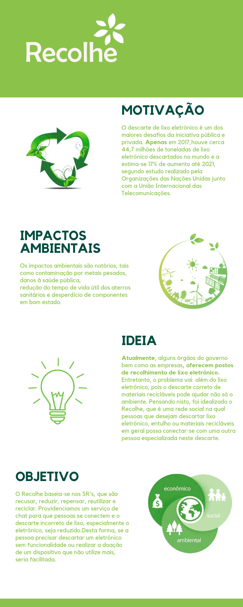

<div ng-include="'sidebar.html'"></div>
<div class="wrapper ">
    <div class="main-panel">
        <nav class="navbar navbar-expand-lg navbar-transparent navbar-absolute fixed-top ">
            <div class="container-fluid">
                <div class="navbar-wrapper">
                    <a class="navbar-brand" href="">Sobre</a>
                </div>
                <button class="navbar-toggler" type="button" data-toggle="collapse" aria-controls="navigation-index"
                        aria-expanded="false" aria-label="Toggle navigation">
                    <span class="sr-only">Toggle navigation</span>
                    <span class="navbar-toggler-icon icon-bar"></span>
                    <span class="navbar-toggler-icon icon-bar"></span>
                    <span class="navbar-toggler-icon icon-bar"></span>
                </button>
                <div class="collapse navbar-collapse justify-content-end">
                    <ul class="navbar-nav">
                        <li class="nav-item">
                            <a class="nav-link" href="">
                                <i class="material-icons">notifications</i> Notificacoes
                            </a>
                        </li>
                    </ul>
                </div>
            </div>
        </nav>
        <div class="content">
            <div class="container-fluid">
                <div class="col-12">
                    
                </div>
            </div>
        </div>
    </div>
</div>